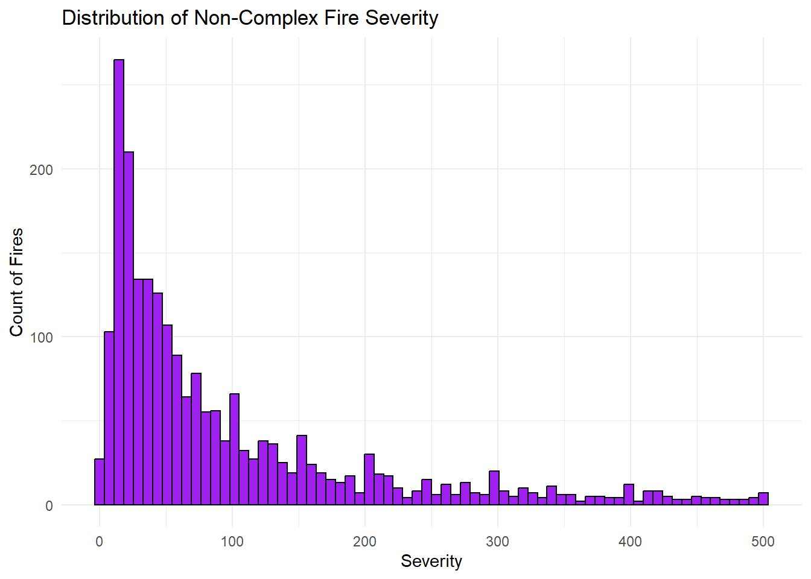

library(here)
library(readr)
library(dplyr)
library(rsample)
library(ggplot2)
library(naniar)
library(lubridate)
library(tidyr)
library(janitor)
library(recipes)
library(parsnip)
library(workflows)
library(yardstick)
library(tune)
library(dials)
library(broom)Understanding Fire Severity in California
Motivation and Context
The devastating series of wildfires in Los Angeles County earlier this January inspired me to focus my final project on analyzing fire incidents across California counties over the past 12 years. This project aims to explore key relationships between predictor variables and the severity of wildfires, measured by acres burned, while also developing a predictive model to anticipate future fire impacts. In addition to model-building, I’m investigating several important inference questions that reflect real-world concerns:
Does the severity of a wildfire depend on the season of the year?
Are wildfires in California worsening over time in terms of severity?
Does a Complex fire in California influence fire severity?
By addressing these questions, I hope to better understand the patterns behind wildfire behavior—an understanding that could be crucial in shaping actuarial risk models and insurance strategies in the future.
This problem is especially compelling to me because I am majoring in Mathematics with a concentration in Actuarial Science and intend to pursue the Casualty Actuarial Society (CAS) track within the Property and Casualty insurance industry. As someone preparing for a career focused on analyzing risk and uncertainty, I believe that understanding the severity of fires in California, even if only measured by acres burned, is relevant for my career. Wildfires play a significant role in shaping Homeowners Insurance, both in terms of pricing and coverage availability. By studying this issue more deeply, I hope to gain insights that will one day allow me to develop more accurate predictive models and contribute to effective risk management strategies. Understanding these patterns isn’t just academically interesting—it directly aligns with my long-term professional goals of helping insurers and communities better prepare for and respond to natural disasters.
Note: For context, it is important to note the key difference between the severity being measured in this project and the severity in insurance rate making.
In this project, we are defining severity as how destructive a fire is based on the length it impacted, disregarding other factors:
\[ \text{Severity} = \text{Amount of acres burned by a fire}\ \]
In insurance rate making, severity refers to the average cost of a claim:
\[ \text{Severity} = \frac{\text{Total Loss Amount}}{\text{Number of Claims}} \]
OBS: This clarification will definitely be helpful for actuaries and insurance professionals.
Main Objective
I believe the insights gained from my analysis should be beneficial for my growth as a data scientist. Addressing this issue allows me to connect my career aspirations with a real opportunity to showcase the data analysis approaches I have learned in this class. The inferences drawn from my project should be merely illustrative and not applied in the real world since my analysis have so many limitations. Although, I believe this project have the potential to incentivize other data scientists, statisticians, and actuaries to help this issue by working on better predictive models and encourage continuous improvement in wildfire risk assessment. Ultimately, I hope my work can serve as a small but meaningful step toward the improvement of data analysis models to tackle the growing threat of wildfires.
Packages
| Package | Function |
|---|---|
| here | to easily load and save data |
| readr | to import the CSV file data |
| dplyr | to massage and summarize data |
| rsample | to split data into training and test sets |
| ggplot2 | to create nice-looking and informative graphs |
| recipes | to define and apply data transformation steps |
| naniar | for visualizing and handling missing data |
| broom | for visualizing and handling missing data |
| lubridate | to simplify working with dates and times |
Data Description
I am using the fire incident data available at the CAL FIRE website. CalFIRE (California Department of Forestry and Fire Protection) is California’s state agency responsible for fire protection in State Responsibility Areas (SRAs), which include over 31 million acres of wild lands and areas with significant natural resources. CAL FIRE also provides emergency services in cooperation with local governments and handles forest management, fire prevention, and resource protection.
All of the agency’s information comes from the fire lines and must be approved by the Incident Commander in charge of managing the incident prior to release. The data then gets compiled by their staff and published in their website for the public to access. In their incidents page, there is a Current Emergency Incidents section where it shows fire related information such as evacuation orders and acres burned through Earthstar Geographics powered by Esri, Genasys and Perimeter. However, since I needed the whole historical fire data set to perform my analysis , I collected the CSV file, they offered.
The main reasons why they collect the fire incident data includes fastening fire responsiveness, prevention of future fires, to inform the public through statistics, and to create an incentive for more funding towards fire prevention.
OBS: It is important to note that the original excel file from CalFIRE contained significant amount of unnecessary raw data, and some wrong/outdated information. Therefore, this will be taken care of in our Data Wrangling section to ensure our Analysis is as precise and professional as possible.
original_fire <- readr::read_csv(here::here("mapdataall.csv"))
#original historical fire data from CalFIREData Limitations
CalFIRE makes it clear in their disclaimer that the data provided is intended for general reference rather than detailed scientific or emergency analysis. Therefore, important limitations must be considered when interpreting my model’s conclusions.
1) Bias in data collection: One possible source of bias is the fact that CalFIRE reportedly shared that a significant amount of small fires could go under reported, even more so if the incident burns less than 10 acres. Furthermore, another source of bias can be explained by how I performed variable selection during the modeling process. Since I got the data before specifing my linear model, I must account for selection bias.
2) Variables Mismatches: The outcome variable in our linear model, acres_burned is the only variable being used in my analysis to define the severity of the fire incidents. However, we are excluding so many crucial variables that influence a fire severity in the real-world such as structures destroyed, rural/urban differences, fire escalation, lack of firefighters, area accessibility, injuries, fatalities, more expensive/cheaper neighborhoods, total loss, and more. Plus, the variables incident_season and incident_county are very broad. I am not accounting for local weather, vegetation, source of fire, and human factors that could influence a fire behavior in the real-world.
3) Model Transferrability: My model is only accounting for fires in California in the past 12 years. Hence, the model might be inappropriate for other regions that present different weather, air humidity, terrain, biodiversity, population demographics, government funding, and more.
Data Wrangling
Data Clean Up
First of all, I must make sure this data set contains only historical fire data. CalFIRE predominantly oversee fire incidents but not exclusively. After some digging in incident_type, there were indeed two incidents reported as flood and one as earthquake. Hence, let’s remove them from our original data set and change the updated data set name for good practice.
fire_data <- original_fire %>%
filter(!incident_type %in% c("Flood", "Earthquake"))We should be worried about the observations that have missing data for the incident_type variable because what if they are not a fire incident. Hence, I made sure to check the incident_name manually to ensure all of the observations in our data set were only fire incidents.
Furthermore, since acres burned will be our response variable we must make sure we are only looking at fires that were already contained so that we know exactly how many acres were affected. Hence, the chunk below removes all the fire incidents that were still active as of May 2025. In this case, there were only three.
fire_data <- fire_data %>%
filter(!is_active %in% c("Y"))Moreover, since we are only looking at fire incidents back to twelve years ago, starting from 2013, I must apply a filter to remove the reported fires before that year. Also, I should apply a filter to remove the fires of 2025 later on when attempting to make inference about the fire severity trend over the years, because the graph might be misleading since we are in May and hence the count of fires will be significantly smaller than other years. For simplicity, I will apply those filters later on when I create the variable year. The reason why we picked 2013 as the starting year is because it is when the reporting data became regular and consistent. Before, there were only two fires incidents from 1969 and one from 2009.
Lastly, I must make sure the fire location, incident_county, is only considering California counties. After manually analyzing that variable, I did find that some reported fires are from Mexico and State of Nevada. This might have happened since the country and state are close to the border. Thus, we shall remove them manually:
fire_data <- fire_data %>%
filter(!incident_county %in% c("Mexico, San Diego", "Nevada", "State of Nevada", "Nevada, Placer"))Variable Selection
Now, let’s take a look at the variables in the original data set provided by CalFIRE and understand the variables we are working with:
head(original_fire, 10)# A tibble: 10 × 23
incident_name incident_is_final incident_date_last_u…¹ incident_date_created
<chr> <chr> <dttm> <dttm>
1 Bridge Fire Y 2018-01-09 13:46:00 2017-10-31 11:22:00
2 Pala Fire Y 2020-09-16 14:07:35 2009-05-24 14:56:00
3 River Fire Y 2022-10-24 11:39:23 2013-02-24 08:16:00
4 Fawnskin Fire Y 2013-04-22 09:00:00 2013-04-20 17:30:00
5 Gold Fire Y 2013-05-01 07:00:00 2013-04-30 12:59:00
6 Panther Fire Y 2022-10-24 11:40:03 2013-05-01 09:12:00
7 Silverado Fire Y 2013-05-01 17:15:00 2013-04-30 23:44:00
8 Yellow Fire Y 2013-05-03 06:15:00 2013-05-01 02:01:00
9 Summit Fire Y 2022-10-24 11:40:42 2013-05-01 12:38:00
10 Tres Pinos Fi… Y 2013-05-03 18:45:00 2013-05-03 11:42:00
# ℹ abbreviated name: ¹incident_date_last_update
# ℹ 19 more variables: incident_administrative_unit <chr>,
# incident_administrative_unit_url <lgl>, incident_county <chr>,
# incident_location <chr>, incident_acres_burned <dbl>,
# incident_containment <dbl>, incident_control <chr>,
# incident_cooperating_agencies <chr>, incident_longitude <dbl>,
# incident_latitude <dbl>, incident_type <chr>, incident_id <chr>, …colnames(original_fire) [1] "incident_name" "incident_is_final"
[3] "incident_date_last_update" "incident_date_created"
[5] "incident_administrative_unit" "incident_administrative_unit_url"
[7] "incident_county" "incident_location"
[9] "incident_acres_burned" "incident_containment"
[11] "incident_control" "incident_cooperating_agencies"
[13] "incident_longitude" "incident_latitude"
[15] "incident_type" "incident_id"
[17] "incident_url" "incident_date_extinguished"
[19] "incident_dateonly_extinguished" "incident_dateonly_created"
[21] "is_active" "calfire_incident"
[23] "notification_desired" We can see there are some unnecessary variables that can be removed from this data set because they will be irrelevant to our analysis. More specifically:
incident_is_final- I am only considering incidents that are final because days active is one of my predictor variables. Plus, there were only 3 fires that were active on the data set. They will be deleted in the chunks below.incident_date_last_update- Irrelevant for our analysis since fires considered are final.incident_county- I modified this variable to only include counties in California.incident_location- This column described the location of the fire, some cells described which freeway, other cells described off of which street, other cells gave more estimations (i.e. near the 4500 block of Chuckwagon Drive, Copperopolis). It would be very ambitious to consider this a variable.incident_containment- This column showed what percentage of the fire was contained, while 2794 out of 2864 were contained, the data showed 70 cells with missing data or less than 100% contained. However, this seems to be a variable that was not updated because all of those 70 fires were extinguished already, hence they have to have been contained.incident_longitudeandincident_latitude- Irrelevant for our analysis, no need for the location of the fire to be this specific.incident_type- The original data set did contain two floods and one earthquake incidents that I deleted for the polished excel file. Also, this variable differentiated fire from wildfire. Since we are not getting that specific I decided to drop this variable as well.incident_date_extinguishedandincident_dateonly_extinguished- I was going to use this variable to calculate for how long each fire has been active. However, after some digging, I found multiple inconsistencies in the reportedly duration of the fire. Some of them showed that they were active for more than a year! Plus, I found that if we considerincident_date_extinguished, near half of the fires supposedly were active for more than 60 days, which does not sound reasonable at all. However, I did not lose hope with this data set from CalFIRE because theincident_date_createdhas been precisely accurate with every fire I researched on my own. Similarly withacres_burned.incident_date_created- Repetitive, we already haveincident_dateonly_created.incident_administrative_unit,incident_administrative_unit_url,incident_control,incident_cooperating_agencies,incident_id,incident_url,calfire_incident,notification_desired- Irrelevant for our analysis.
Let’s create a new data set with those variables removed:
fire_data <- fire_data %>%
select(-c(incident_is_final, incident_date_last_update, incident_location, incident_containment, incident_longitude, incident_latitude, incident_type, incident_date_extinguished, incident_dateonly_extinguished, incident_administrative_unit, incident_administrative_unit_url, incident_control, incident_cooperating_agencies, incident_id , incident_url, calfire_incident, notification_desired, incident_date_created, is_active))
# To remove all the variables we deemed unecessary.Now that we have removed those unnecessary variables. Let’s extract other interesting variables from the given ones and perhaps change their names for our data set to look more professional. For example, from the date the fire was created we can extract the year, the month, and the season that fire originated. Hence, here are the variables we are creating from the given data:
year- what year the fire originated.month- what month the fire originated in numeric form.season- what was the season when the fire originated.is_complex- a fire is called a “complex” when two or more fires burn in the same general area and are managed under a single incident command or unified command.
fire_data <- fire_data %>%
mutate(
year = year(incident_dateonly_created),
month = factor(month(incident_dateonly_created),
levels = 1:12,
labels = c("Jan", "Feb", "Mar", "Apr", "May",
"Jun","Jul", "Aug", "Sep", "Oct",
"Nov", "Dec")),
season = case_when(
month %in% c("Dec", "Jan", "Feb") ~ "Winter",
month %in% c("Mar", "Apr", "May") ~ "Spring",
month %in% c("Jun", "Jul", "Aug") ~ "Summer",
month %in% c("Sep", "Oct", "Nov") ~ "Fall",
TRUE ~ NA_character_
),
is_complex = grepl("Complex", incident_name)
)Now we can easily apply the filter to year and only consider fires from 2013 to 2024.
fire_data <- fire_data %>%
filter(year >= 2013)Now, let’s change some of the variables names for aesthetic:
fire_data <- fire_data %>%
rename(
name = incident_name,
county = incident_county,
severity = incident_acres_burned,
date = incident_dateonly_created,
)Finally, let’s take a look at our updated and clean data set. We are now one step closer to perform our Analysis.
head(fire_data, 10)# A tibble: 10 × 8
name county severity date year month season is_complex
<chr> <chr> <dbl> <date> <dbl> <fct> <chr> <lgl>
1 Bridge Fire Shasta 37 2017-10-31 2017 Oct Fall FALSE
2 River Fire Inyo 407 2013-02-24 2013 Feb Winter FALSE
3 Fawnskin Fire San Bernar… 30 2013-04-20 2013 Apr Spring FALSE
4 Gold Fire Madera 274 2013-04-30 2013 Apr Spring FALSE
5 Panther Fire Tehama 6896 2013-05-01 2013 May Spring FALSE
6 Silverado Fire Napa 75 2013-04-30 2013 Apr Spring FALSE
7 Yellow Fire Sonoma 125 2013-05-01 2013 May Spring FALSE
8 Summit Fire Riverside 2956 2013-05-01 2013 May Spring FALSE
9 Tres Pinos Fire San Benito 354 2013-05-03 2013 May Spring FALSE
10 306 Fire Glenn 217 2013-05-01 2013 May Spring FALSE colnames(fire_data)[1] "name" "county" "severity" "date" "year"
[6] "month" "season" "is_complex"Exploratory Data Analysis
In this section, we will explore our variables by looking at their distributions and relationship between our categorical variables and our response variable, severity.
Missing Data
Before exploring our variables, we must address how much of the data is missing and how can we tackle this problem.
fire_data |>
miss_var_summary()# A tibble: 8 × 3
variable n_miss pct_miss
<chr> <int> <num>
1 severity 51 1.80
2 county 10 0.354
3 name 0 0
4 date 0 0
5 year 0 0
6 month 0 0
7 season 0 0
8 is_complex 0 0 Hence, we have 61 missing data points in total in our data. More precisely, 51 reports missing for severity (acres burned) and 10 reports missing for county (fire incident county), which represents about 1.80% and 0.35% of those variables, respectively, total reported data. Therefore, this is a good sign that our data set has barely any data missing. We could even visualize how insignificant the missingness is related to our overall data,
vis_miss(fire_data, cluster = TRUE, sort_miss = TRUE)gg_miss_upset(fire_data,
nsets = 9)`geom_line()`: Each group consists of only one observation.
ℹ Do you need to adjust the group aesthetic?Therefore, approximately 2% of the data had missing values. I opted to remove those rows. This avoids the need for potentially biased imputation of the target variable, with methods such as Mean/Median/Mode, linear model, or softImpute. The small proportion of missing data will not significantly impact our overall analysis.
Moreover, we it is plausible to ignore the missing data because the “upset” plot indicated that the variables do not tend to be missing together. Hence, this strengthen, but does not prove, our assumption that the data can be treated as Missing Completely at Random (MCAR).
fire_data <- fire_data %>%
drop_na() fire_data |>
miss_var_summary()# A tibble: 8 × 3
variable n_miss pct_miss
<chr> <int> <num>
1 name 0 0
2 county 0 0
3 severity 0 0
4 date 0 0
5 year 0 0
6 month 0 0
7 season 0 0
8 is_complex 0 0Hence, we now have a clean data set with 2,766 fire incidents across California with no missing data.
Data Split
Furthermore, we should split the data into a training set (fire_train) and test set (fire_test). The recommended amount of data in the training set is roughly 80% for a random split, thus we shall follow that. We must apply this split for several reasons, more importantly, to prevent over fitting and to evaluate/compare models accurately. Our test set is extremely important because it acts like “new” data, helping us check if the trained model generalizes. Also, since we are planning on making inference claims, we must make sure our model’s conclusions are not specific to the training set only.
set.seed(437)
n <- nrow(fire_data)
train_indices <- sample(n, size = floor(0.8*n))
fire_train <- fire_data[train_indices,]
fire_test <- fire_data[-train_indices,]Exploring Variables
Let’s take a look at our response variable:
fire_train |>
summarize(
num_total = n(),
mean = mean(severity),
sd = sd(severity),
min = min(severity),
Q1 = quantile(severity, 0.25),
median = median(severity),
Q3 = quantile(severity, 0.75),
max = max(severity)
)# A tibble: 1 × 8
num_total mean sd min Q1 median Q3 max
<int> <dbl> <dbl> <dbl> <dbl> <dbl> <dbl> <dbl>
1 2212 4538. 38586. 0 30 83 334. 1032648Hence, this tell us that from the 2,212 fires observed in our training set, 50% of them burned between 30 and 338 acres, with 25% of fires burning less than 30 acres and 25% of fires burning more than 338 acres. Notice how the average (mean) of acres burned is around 4,320 acres which is much higher than the median of 83 acres. This implies that half of the fires burn 85 acres or less, however there are a few massive fires (outliers) that are significantly shifting the average. Plus, the standard deviation is extremely high, around 37,221 acres. This suggests a very strong right skewness for the distribution of severity .
Furthermore, notice how we have observations of fires that burned 0 acres and a fire that was able to reach the incredible 1,032,648 acres mark. This extreme difference between fire severity explain the variability in the data, together with he standard deviation. In fact, in other to show the plot of severity we need to apply a Logarithmic Scale to compress those extreme values and allow us to visualize and interpret the full distribution of severity .
ggplot(fire_train, aes(x = severity)) +
geom_histogram(bins = 70, fill = "purple", color = "black") +
scale_x_log10() +
labs(title = "Distribution of Fire Severity (Log Scale)", x = "Severity", y = "Count of Fires") +
theme_minimal()As predicted, severity has a clear right-skewed distribution. Here is how to interpret the Log Scale:
| Notation | Acres Burned |
|---|---|
| 1e+01 | 10 |
| 1e+02 | 100 |
| 1e+03 | 1,000 |
| 1e+04 | 10,000 |
| 1e+05 | 100,000 |
| 1e+06 | 1,000,000 |
Hence, the histogram reveals that the great majority of fires in our training set burn between 10 to 1,000 acres. Including an extreme “high peak” at a little before 100 acres, which explains the median of 83 from our Summary.
Now, let’s compare the severity of the fires by season of the year:
ggplot(fire_train, aes(x = season, y = severity)) +
geom_boxplot(fill = "purple") +
scale_y_log10() +
labs(
title = "Severity of Fires by Season (Log Scale)",
x = "Season",
y = "Severity"
) +
theme_minimal()Hence, we can see that the median fire severity appears consistent across the seasons, with about half of the fires in each season burned around or a little below 100 acres. However, Fall and Summer demonstrate to have the most outliers (extreme fire events) with severity well above 10,000 acres and even reaching up to over 1,000,000 acres, in Summer. This strongly suggests that while the typical size of fire in our training set do not vary much across seasons, the most severe fires tend to happen during Summer and Fall.
fire_train |>
group_by(season) |>
summarize(
num_total = n(),
mean = mean(severity),
sd = sd(severity),
min = min(severity),
Q1 = quantile(severity, 0.25),
median = median(severity),
Q3 = quantile(severity, 0.75),
max = max(severity)
)# A tibble: 4 × 9
season num_total mean sd min Q1 median Q3 max
<chr> <int> <dbl> <dbl> <dbl> <dbl> <dbl> <dbl> <dbl>
1 Fall 463 3470. 20698. 0 30 82 378 379895
2 Spring 269 511. 2122. 0 23 70 197 30274
3 Summer 1404 5647. 46301. 0 31.8 86 351. 1032648
4 Winter 76 4810. 32338. 0 23.8 53.5 398 281893More precisely, notice how many more fires happened in California during Summer compared to the other seasons, 1,400 fire incidents representing around 63% of the fires in our training set. Hence, this suggests that fire incidents in our training set tend to happen significantly more often during the Summer than other seasons.
What if we look at the fire severity over the years. However, we must be careful to not include the fire incidents from 2025 since we are only in the middle of the year and the amount of fires will most likely be less than other years. Hence, including those could cause a misleading plot. Thus, we will subset the rows of fire_train to not include the incidents from 2025.
Note: We did not just remove the fires from 2025 from fire_data , the whole data set, because the data was useful for us to plot the severity distribution and to analyze its relationship with season .
fire_over_years <- fire_data |>
filter(year <= 2024)fire_over_years |>
group_by(year) |>
summarize(
num_total = n(),
mean = mean(severity),
sd = sd(severity),
min = min(severity),
Q1 = quantile(severity, 0.25),
median = median(severity),
Q3 = quantile(severity, 0.75),
max = max(severity)
)# A tibble: 12 × 9
year num_total mean sd min Q1 median Q3 max
<dbl> <int> <dbl> <dbl> <dbl> <dbl> <dbl> <dbl> <dbl>
1 2013 138 3599. 22369. 0 50 124 498 257314
2 2014 73 4063. 13329. 0 75 274 1651 97717
3 2015 95 4315. 18745. 0 51 110 408. 151623
4 2016 153 2954. 12703. 0 45 114 554 132127
5 2017 420 2993. 16449. 0 29.8 74 400 281893
6 2018 298 5134. 30591. 0 30 78.5 312 410203
7 2019 258 1107. 6088. 9 33 90.5 262. 77758
8 2020 242 12142. 78823. 2 56.2 161 693 1032648
9 2021 178 12863. 78833. 10 43.2 109 460. 963309
10 2022 131 2116. 9133. 10 37.5 93 321 76788
11 2023 121 2669. 12948. 5 32 70 296 95107
12 2024 606 1690. 18079. 2 17 43 150 429603ggplot(
data = fire_over_years,
mapping = aes(
x = year,
y = severity
)
) +
geom_point(
alpha = 0.2
) +
geom_smooth(method = "loess", se = FALSE, color = "tomato") +
scale_y_log10() +
scale_x_continuous(breaks = seq(2013, 2024, 1)) +
labs(title = "Fire Severity Over Time",
x = "Years",
y = "Severity (Log Scale)"
)Hence, this plot suggests that year have a slight effect on severity .
OBS: Our choice of alpha here, “alpha = 0.2” is to reduce the opacity of the data points and make them more readable.
ggplot(data = fire_train,
mapping = aes(
x = season,
y = severity
)
) +
scale_y_log10() +
geom_boxplot(fill = "purple") +
geom_point(aes(color = year),
alpha = 0.8
)Complex Fires
As we have noticed from the severity ’s histogram and 5-number summary, the great majority of fires burned below 500 acres. The ones that end up burning above 500 acres are definitely skewing the severity distribution and its average. Let’s analyze how does the is_complex variable affect the trends in our results. Hence, let’s analyze if the “non-complex fires”, the ones that do not do not classify as complex are skewing our results. It’s plausible to assume they might skew our data since it would make sense that complex fires might have a bigger severity than others, since they normally consist of two or more fires in the same area. It sounds reasonable that they could most likely outburn other non-complex fires. Thus, let’s explore further:
fire_train |>
select(name, severity, is_complex, county, year) |>
filter(severity > 500)# A tibble: 464 × 5
name severity is_complex county year
<chr> <dbl> <lgl> <chr> <dbl>
1 Salt Fire 12660 FALSE Shasta 2021
2 Beckwourth Complex 105670 TRUE Plumas 2021
3 Henry Fire 1320 FALSE Alpine 2021
4 Rabbit Fire 8355 FALSE Riverside 2023
5 Thompson Fire 3789 FALSE Butte 2024
6 Soup Complex 2652 TRUE Modoc 2016
7 Power Fire 1070 FALSE Tuolumne 2013
8 Mountain Fire 19904 FALSE Ventura 2024
9 Lions Fire 4064 FALSE Madera 2018
10 Airline Fire 1295 FALSE San Benito 2024
# ℹ 454 more rowsHence, out of the 2212 fire incidents in our training set, only 464 indicate a severity higher than 500 acres. Representing around 21% of the fires in the training set. Including the ultimate outlier of this entire data set, the August Complex from 2020, a fire so devastating that burned 1,032,648 acres.
Which again, it means that two or more fires burned in the same general area and were managed under a single incident command or unified command.
It might be interesting to check how the distribution of severity would look like without these extreme fire incidents. Thus,
fire_non_extreme <- fire_data |>
filter(severity <= 500)
fire_non_extreme |>
summarize(
num_total = n(),
mean = mean(severity),
sd = sd(severity),
min = min(severity),
Q1 = quantile(severity, 0.25),
median = median(severity),
Q3 = quantile(severity, 0.75),
max = max(severity)
)# A tibble: 1 × 8
num_total mean sd min Q1 median Q3 max
<int> <dbl> <dbl> <dbl> <dbl> <dbl> <dbl> <dbl>
1 2188 95.6 106. 0 24 53 125 500ggplot(fire_non_extreme, aes(x = severity)) +
geom_histogram(bins = 70, fill = "purple", color = "black") +
labs(title = "Distribution of Non-Complex Fire Severity", x = "Severity", y = "Count of Fires") +
theme_minimal()
Hence, the distribution of severity shifted a little bit to the center. However, it still shows a right-skewed distribution and considerable variability that is explained by the 106 acres standard deviation and this time not so absurd difference between the average (96 acres) vs the median (53 acres).
Furthermore, let’s check if is_complex affects severity:
fire_train |>
group_by(is_complex) |>
summarize(
num_total = n(),
mean = mean(severity),
sd = sd(severity),
min = min(severity),
Q1 = quantile(severity, 0.25),
median = median(severity),
Q3 = quantile(severity, 0.75),
max = max(severity)
)# A tibble: 2 × 9
is_complex num_total mean sd min Q1 median Q3 max
<lgl> <int> <dbl> <dbl> <dbl> <dbl> <dbl> <dbl> <dbl>
1 FALSE 2171 3125. 27980. 0 30 80 306. 963309
2 TRUE 41 79354 184337. 0 2207 12503 50198 1032648ggplot(fire_train, aes(x = is_complex, y = severity)) +
geom_boxplot(fill = "orange") +
scale_y_log10() +
labs(
title = "Severity of Fires by Season (Log Scale)",
x = "Complex",
y = "Severity"
) +
theme_minimal()Even though there are only 41 Complex fires out of 2212 fires in our training set, the median and mean of the Complex fires are extremely higher than of the regular fires. More specifically, the median of Complex fires is 12,503 acres vs the median of the regular fires is 80 acres. Therefore, it is recommended to move forward to our modeling while considering the complex fire incidents, because according to the box plots and 5-number summary, they do seem to show a significant effect in severity. Hence, they are important for our analysis since severity is our response variable.
Modeling
Based on our Exploratory Data Analysis and the fact that our response variable severity is numeric with variable predictors categorical, I decided to perform my modeling with Multiple Linear Regression.
Multiple Linear Regression
lm_model <- lm(severity ~ season + year + is_complex,
data = fire_train)
summary(lm_model)
Call:
lm(formula = severity ~ season + year + is_complex, data = fire_train)
Residuals:
Min 1Q Median 3Q Max
-79753 -3897 -3642 -1706 959301
Coefficients:
Estimate Std. Error t value Pr(>|t|)
(Intercept) -49045.55 474046.23 -0.103 0.918
seasonSpring -1497.26 2857.16 -0.524 0.600
seasonSummer 1968.80 1995.41 0.987 0.324
seasonWinter 1764.11 4630.96 0.381 0.703
year 25.28 234.75 0.108 0.914
is_complexTRUE 75846.37 5879.64 12.900 <2e-16 ***
---
Signif. codes: 0 '***' 0.001 '**' 0.01 '*' 0.05 '.' 0.1 ' ' 1
Residual standard error: 37210 on 2206 degrees of freedom
Multiple R-squared: 0.07209, Adjusted R-squared: 0.06999
F-statistic: 34.28 on 5 and 2206 DF, p-value: < 2.2e-16Thus, we are modeling severity based on season, year, and is_complex. Our intercept \((-49046)\) is the expected severity of a non-complex fire when it happens in the Fall season.
The coefficients seasonSpring , seasonSummer, seasonWinter reveal the expected difference in severity when compared to the Fall season. Notice how none of the p-values are significant, hence \(p > 0.05\). Thus, there is no sufficient evidence to conclude that fire severity depends by season after controlling for year and is_complex .
The coefficient of year is \(25.28\) would imply that the severity of a fire increases by \(25.28\) acres per year. However, there is not sufficient evidence to conclude this since the p-value = \(0.914 > 0.05\).
The coefficient of is_complexTRUE is \(75,846\). Since the p-value is extremely small, p < 2e-16. We have very strong evidence that Complex fires burn on average \(75,846\) acres more than regular fires. Hence, making is_complex our only statiscally significant predictor variable in this model.
To measure our model performance, we can look at the given measures in our model summary:
Residual Standard Error (RSE): Measures the average size of error in our model, how far off our predictions are, given by
\[ \text{RSE} = \sqrt{ \frac{1}{n - p - 1} \sum_{i=1}^{n} (y_i - \hat{y}_i)^2 } \]
R-squared: Measures how much of the variation in our response variable is explained by the predictors in our model, given by
\[ R^2 = 1 - \frac{SS_{\text{res}}}{SS_{\text{tot}}} \]
where,
\[ SS_{\text{res}} = \sum_{i=1}^{n} (y_i - \hat{y}_i)^2, \quad SS_{\text{tot}} = \sum_{i=1}^{n} (y_i - \bar{y})^2 \]
Hence, our \(RSE\) is telling us that the average prediction error in our model is around 37,210 acres. This is not good because the error is too high. Plus, our \(R^2\) tells us that our model can only explain 7.2% variation in severity. This is also not good because it means that our model does not tell us much.
Our model lack of success must be because of how strongly skewed the distribution of severity is. Hence, let’s apply a log transformation with the goal to reduce the skewness and improve our model. However, we must then not include those fires which severity was 0, hence smaller fires that burned 0 acres.
Note: This is because log(0) is undefined.
Thus by doing so, we are leaving behind from our modeling 17 fire observations, as observed in the chunk below.
fire_train |>
select(name, severity) |>
filter(severity == 0)# A tibble: 17 × 2
name severity
<chr> <dbl>
1 Pressley Fire (Central LNU Complex) 0
2 Oroville Spillway 0
3 Mokelumne Fire 0
4 Gorman Fire 0
5 Grape Fire 0
6 Soda Fire 0
7 Orleans Complex 0
8 Cristianitos Fire 0
9 Happy Camp Complex 0
10 King Incident 0
11 Salmon-August Complex 0
12 Klamath Fire 0
13 Rattlesnake Fire 0
14 Warner Mountain Lightning 0
15 Hathaway Fire 0
16 Clear Complex (merged into Eclipse Complex) 0
17 Creek Fire 0Note: This is because log(0) is undefined.
fire_train_non_zero <- fire_train %>%
filter(severity > 0)
lm_model_log <- lm(log10(severity) ~ season + year + is_complex,
data = fire_train_non_zero)
summary(lm_model_log)
Call:
lm(formula = log10(severity) ~ season + year + is_complex, data = fire_train_non_zero)
Residuals:
Min 1Q Median 3Q Max
-2.7706 -0.6205 -0.1881 0.3998 3.9298
Coefficients:
Estimate Std. Error t value Pr(>|t|)
(Intercept) 90.5799067 10.8830624 8.323 < 2e-16 ***
seasonSpring -0.1598536 0.0655252 -2.440 0.0148 *
seasonSummer -0.0005002 0.0457450 -0.011 0.9913
seasonWinter 0.0109204 0.1065341 0.103 0.9184
year -0.0438028 0.0053894 -8.128 7.25e-16 ***
is_complexTRUE 2.0062501 0.1431829 14.012 < 2e-16 ***
---
Signif. codes: 0 '***' 0.001 '**' 0.01 '*' 0.05 '.' 0.1 ' ' 1
Residual standard error: 0.8507 on 2189 degrees of freedom
Multiple R-squared: 0.1145, Adjusted R-squared: 0.1125
F-statistic: 56.6 on 5 and 2189 DF, p-value: < 2.2e-16Therefore, this log transformation increased the model’s performance and efficiency. This is notable since now we have three statistically significant predictors.
seasonSpringhas a p-value of \(0.0148 < 0.05\). Hence, there is sufficient evidence to conclude that fires in the Spring burn, in total, \(10^{-0.16} = 0.69\) fewer acres than fires in the Fall.yearhas a p-value of 7.25e-16. Therefore, there is very strong evidence suggesting that fires are getting smaller each year, more precisely, reducing \(10^{-0.04} = 0.91\) acres per year.is_complexTRUE has a p-value of less than 2e-16. Thus, there is very strong evidence claiming that Complex fires burn, in total, \(10^2 = 100\) more acres than regular fires.
Hence, this model tell us that Complex fires are the biggest predictor variable of severity. Fires are slightly decreasing in size/severity over time. Lastly, only Spring season shows a significant difference in size/severity of fires than in the Fall.
For our model’s performance, \(RSE = 0.8507\) and \(R^2 = 0.1145\). Hence, the average prediction error in our model is \(10^{0.8507} = 7.09\) acres. This is a much better error than before. Plus, our \(R^2\) tells us that our model can only explain \(11.45\)% variation in severity. This is still not that good because it means that our model does not tell us much.
Now, we must fit our model to the test set (fire_set) since we want to answer our inference questions. We must create a subset of the test set though to filter the fires that did not burned 0 acres, call it fire_test_non_zero.
fire_test_non_zero <- fire_test %>%
filter(severity > 0)Thus, we now predict on the test set.
fire_test_non_zero <- fire_test_non_zero %>%
mutate(predicted_log_severity =
predict(lm_model_log,
newdata = fire_test_non_zero))fire_test_non_zero <- fire_test_non_zero %>%
mutate(log_severity = log10(severity))
metrics(fire_test_non_zero, truth = log_severity,
estimate = predicted_log_severity)# A tibble: 3 × 3
.metric .estimator .estimate
<chr> <chr> <dbl>
1 rmse standard 0.860
2 rsq standard 0.0663
3 mae standard 0.654 Insights
Therefore, we are now able to make inference and answer our questions that motivated my interest for this project. We were able to arrive at these results by applying Multiple Linear Regression with a Log transformation to help with the skewness of severity.
Does the severity of a fire depend on the season of the year?
Yes. During Exploratoy Data Analysis, we could see through the box plots how fires more severe tend to happen during Fall and Summer. However, we were not able to prove that relationship through our model. Although, our model was still able to determine that there is dependency of a fire on one specific season; Spring is shown to burn 0.69 fewer acres than in the Fall.
Are wildfires in California worsening over time in terms of severity?
No. In fact, our model showed very strong significance that fires in California are becoming less severe over time, reducing by 0.91 acres per year.
Does a Complex fire in California influence fire severity?
Yes. In fact, our model successfully showed that Complex fires are the biggest predictor variable of a fire severity in California. They burn in total 100 acres more than regular fires.
Limitations and Future Work
Our model was able to make some inference, but it is not the greatest, there are definitely some limitations to be aware of.
First off, it’s not great at predicting the most extreme fires, the ones that burn huge numbers of acres. These are rare, but when they happen, they can be very different from the more typical fires. Our model tends to underpredict those big ones, probably because there’s not enough of them in the training data to really learn from. Also, we used a log transformation to make the model work better, which helps with scale, but it can also make interpretation a bit less intuitive.
Another limitation is the kind of data we’re working with. All of our predictors are categorical, so we’re missing out some relevant numerical variables that might have a strong relationship with severity like temperature, humidity, wind speed, or vegetation type. If someone were to collect more detailed weather or geographic data for each incident, the model could be way more accurate.
As for assumptions, we used a multiple linear regression model, which assumes linear relationships, normal residuals, constant variance, etc. These assumptions don’t always perfectly hold up in real-world wildfire data, especially with such skewed outcomes like severity.
Talking about ethics, it’s worth thinking about how this data is used. This content is merely illustrative and people should not use it to allocate resources, for example. Although, if this model gets improved and becomes more accurate then it’s important to make sure under-resourced areas aren’t overlooked just because the model predicts less severe fires in that location. Also, because if the data collection itself missed smaller or less-reported fires (especially in rural or underserved regions), it could create bias in the results.
So overall, the model is helpful for our illustrative purpose of showcasing Modern Data Analysis skills, but definitely not to be applied to the real world fire incidents in California. I believe there’s room for improvement both in the data collection and the analysis. Hence, I plan to keep working on this model to make it even more accurate and precise.
Reflection
This project contributed significantly to my understanding of statistical learning and all the steps that one must go through to so that we can answer inference questions from a raw data set, including Research, Data Wrangling, EDA, and Modeling. Plus, I have learned more about the fires in California by looking at their data through distributions and plots. Also, I learned about different associations between the characteristics of a fire, which we called variables.
Math 437 is one of the most important, if not the most important, courses I have taken at CSUF. This is because this class is a big review of all statistical concepts learned from previous Undergrad math courses, while introducing new advanced statistical approaches, and also while teaching how to apply those old and new concepts in R for data analysis. In my opinion, what makes this class so important, is that it makes us actually work with the data from scratch and understand what those numbers, variables, distributions, associations, predictions, and models actually mean.
Hence, I have definitely grown as a mathematician, statistician, and data scientist after taking this course because I had to study as the first one, apply the knowledge as the second, and think analytically like the third. I hope to continue growing in all three areas, as it will contribute to my career as an actuary. I hope to apply the knowledge I have learned from this class in my internship at Mercury Insurance. Not only the technical skills in R, but also the mindset of a true data analyst.